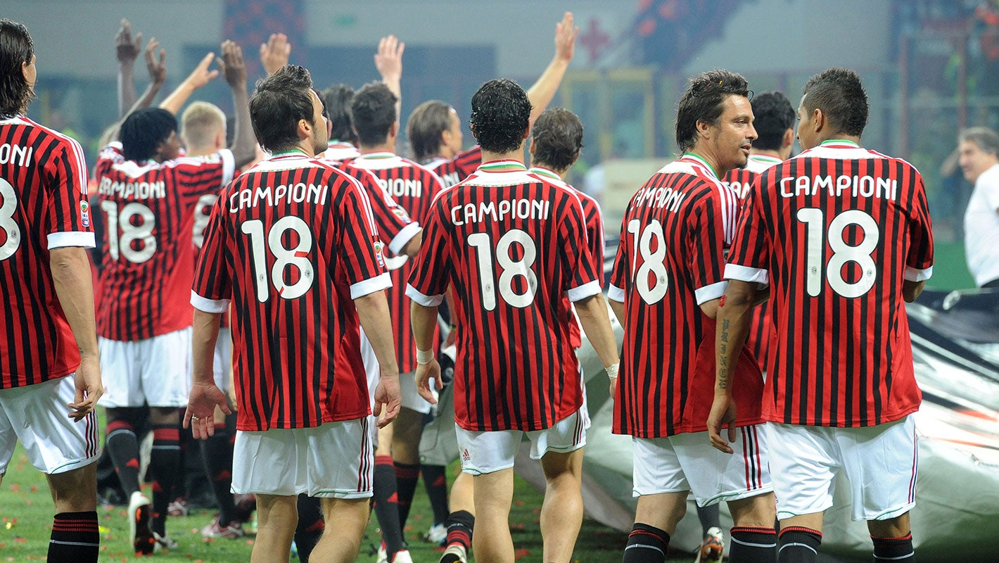
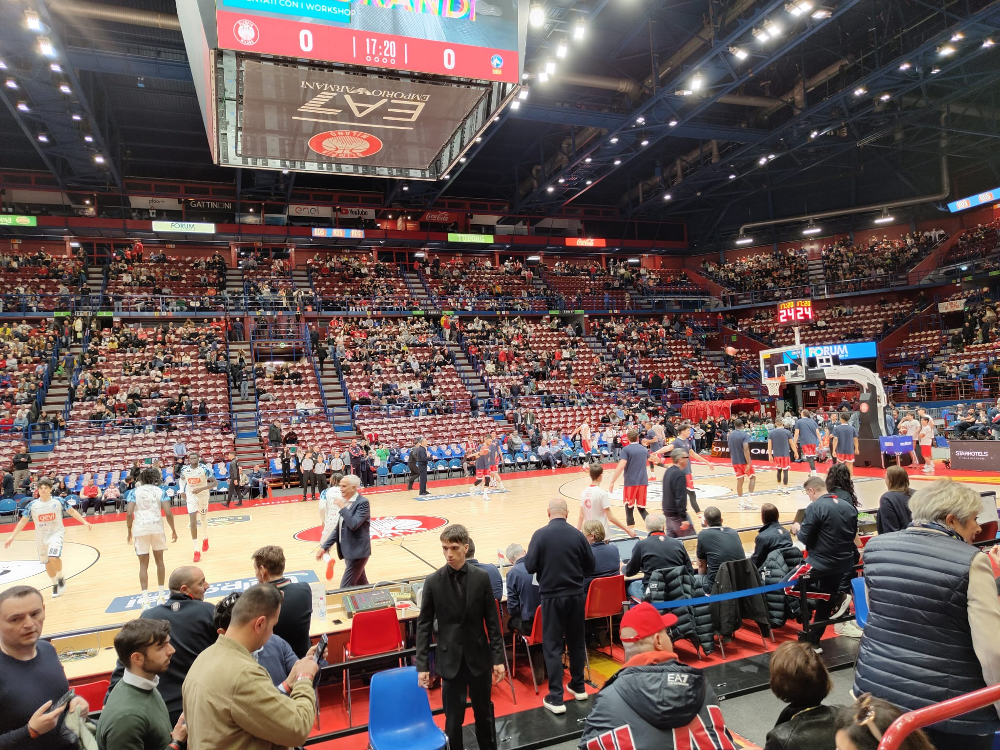
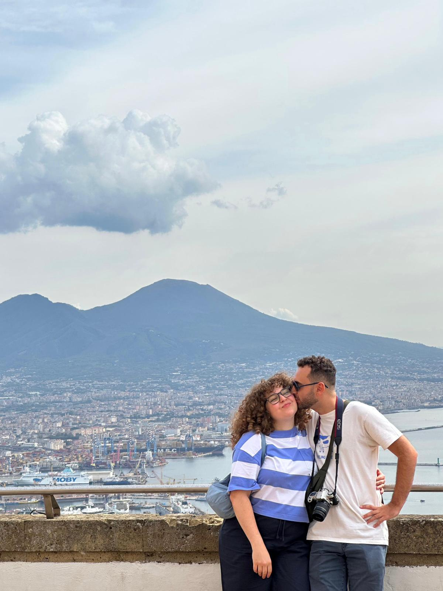
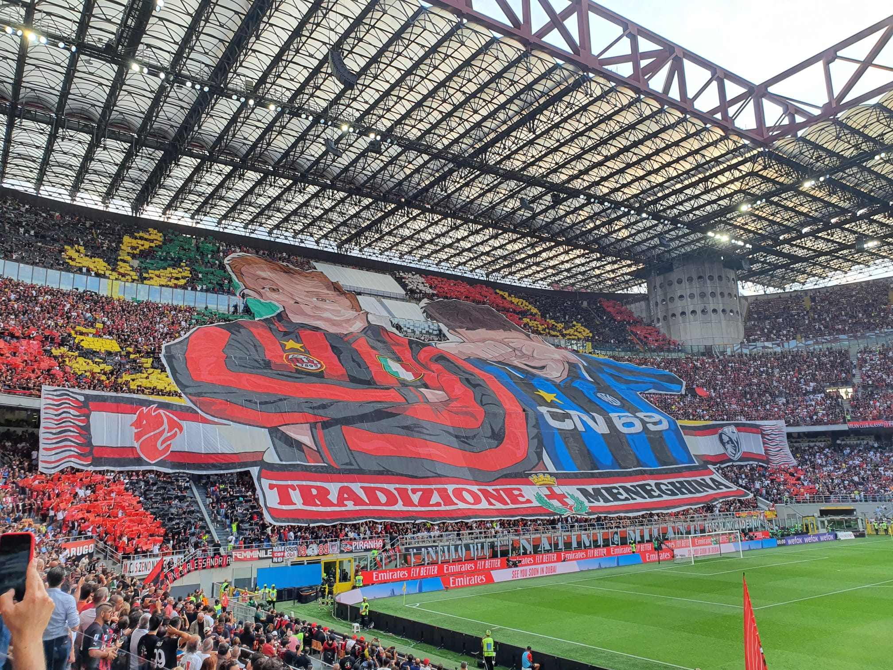

A bit more about me
Beyond
the Data
I spend my days working with numbers and pipelines — but there's a lot more going on outside office hours.




A bit more about me
I spend my days working with numbers and pipelines — but there's a lot more going on outside office hours.

My dad is a Milan fan. So I'm a Milan fan. It really is as simple as that. Growing up, Saturday nights and Sunday afternoons meant one thing: the two of us on the sofa, watching the game. It didn't matter what was on or who was playing — we were there. Most of the time, especially in recent years, it meant suffering together. Watching goals go in against us, shaking heads at signings, arguing about tactics that never quite worked. But that shared suffering is, oddly, the whole point. It's what makes the rare wins feel like something worth celebrating.
The first title that's truly "mine" is the 2011 Scudetto. I was thirteen. I remember watching it with my dad — the tension building through the second half, the final whistle, his reaction. It was the Milan of Ibrahimovic, Thiago Silva, Allegri winning in his suit and tie. At the time I thought that was just what Milan did. Win. I had no idea what was coming next.
Then came the dark years. And when I say dark, I mean genuinely dark. Seventh-place finishes, high-profile sales, club owners rotating like buses, legends leaving one by one. The years when defending Milan against Juventus fans required superhuman effort — and arguments that didn't even convince me. That's what supporting a club really is, though. You do it especially when there's nothing to celebrate.
And then came Pioli. And with him, a Milan nobody expected anymore: young, quick, beautiful to watch. The 2022 title felt different from 2011 — less naive, more aware, and perhaps even more beautiful precisely because of everything that had come before. Celebrating after years of nothing has a flavour you don't forget.

I played basketball for fifteen years. Point guard, number 10, captain. I was decent — genuinely decent — when I was young. Then everyone else started growing. And running faster. And jumping higher. At some point it became clear that my relationship with the sport needed to evolve.
So I became a referee. Four years of it. Which, in hindsight, is either a logical next step or a form of self-punishment — I'm still not sure which. The reason I stopped is simple: I didn't enjoy being shouted at. By coaches, by parents, occasionally by players who were barely fifteen years old. Turns out people have very strong feelings about travelling calls.
That said, it was genuinely one of the more formative things I've done. Refereeing forces you to make decisions in half a second, under pressure, in front of people actively hoping you're wrong. You learn quickly that making the right call matters — but what matters even more is how you sell it. A confident wrong call, explained well and delivered without hesitation, causes far less chaos than a correct one that looks uncertain. I think about that more often than I probably should, well outside the context of basketball.
I've always thought that visiting a place properly means eating it too — not just looking at it.
Museums and monuments tell you what a city wants you to remember. A market stall, a family trattoria, a wine bar where nobody speaks English — those tell you how it actually lives.
To really immerse yourself in a culture, you have to sit down, order something you can't pronounce, and eat without prejudice.
There's also something genuinely good for the mind about eating and drinking well. That quiet satisfaction after discovering a new regional dish, a grape variety you'd never heard of, a preparation that makes something simple taste extraordinary — it's a small but very real form of happiness.
This map is my personal record of the places that gave me that feeling. Click a pin to read the note.
Few people know what scripophily is. Fewer still fall in love with it. I'm one of the lucky few.
Scripophily is the collecting of old stock certificates, bonds, and financial documents — those paper instruments that once represented shares in companies, sovereign loans, investments in railways, mines, and shipping companies. Today they hold no financial value, but they carry extraordinary weight across three very different dimensions.
Art: each certificate was a graphic work in its own right. Elaborate engravings, coats of arms, allegorical figures, ornate borders — nineteenth-century printers put obsessive care into them, partly because the beauty of the document was itself a mark of authenticity.
Economics: each certificate is a window into an economic era. An American railroad bond from 1880, an Austro-Hungarian Empire obligation, a share in the East India Company — they are material traces of how capitalism was built.
History: behind every certificate there is a story — often of greatness, sometimes of failure, always of a world that no longer exists. Strangely, it's not so far removed from data analysis: reading signals from the past to understand how we arrived at the present.
Some things don't belong on a CV but matter more than anything on it. The most important is that I'm happily together with Beatrice.
She's the person I share the good things with — the trips, the dinners, the slow Sundays. But more than that, she's the reason coming home at the end of a day of data, pipelines and meetings actually makes sense.
Everything else on this page describes who I am through my interests. She's the part that holds everything else together.